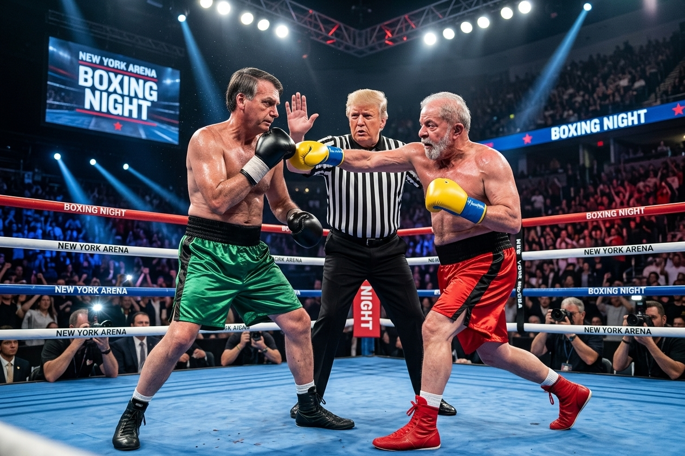
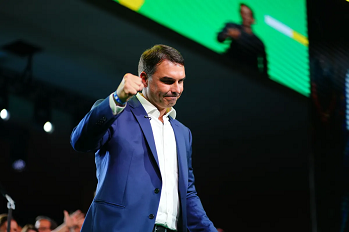

Em um evento que ficará marcado na história do esporte e da política, a cidade de Nova York foi palco de uma luta de boxe sem precedentes entre os ex-presidentes do Brasil, Jair Bolsonaro e Luiz Inácio Lula da Silva. O combate, que ocorreu na icônica New York Arena, atraiu milhares de espectadores e milhões de telespectadores ao redor do mundo, ansiosos para testemunhar o embate entre duas figuras políticas polarizadoras.

A New York Arena foi alugada às pressas para sediar o evento de proporções épicas. Trocando os ternos e os discursos acalorados por luvas e protetores bucais, Jair Bolsonaro (de calções verdes) e Luiz Inácio Lula da Silva (de calções vermelhos) subiram ao ringue para o combate final pelo título de Presidente da República. No entanto, o ingrediente que elevou a tensão internacional da luta foi a escolha do árbitro. Donald Trump, sempre atento e "de olho" no desenrolar geopolítico sul-americano, chamou para si a responsabilidade de mediar o embate. Vestido de juiz, o ex-mandatário americano não apenas separou os clinches mais ferozes, mas acompanhou cada movimento com um olhar calculista, ciente de que o vencedor daquela noite moldaria as alianças do continente pelos próximos anos. Nos bastidores, o comentário é um só: as polêmicas de ontem nas urnas foram apenas o aquecimento. Com Trump intervindo a cada jab e direto, o verdadeiro "terceiro turno" trocou o horário eleitoral gratuito pelo pay-per-view mundial, provando que, na política moderna, a linha entre a democracia e o espetáculo de pesos-pesados deixou de existir. A decisão final, agora, não vem dos mesários, mas dos juízes laterais.
Nova Iorque, EUA – O som ensurdecedor da multidão na New York Arena abafou qualquer resquício de debate político tradicional. Com as urnas eletrónicas deixadas para trás e as alegações pós-eleitorais ainda a ecoar, o chamado "terceiro turno" materializou-se num cenário impensável: 12 assaltos de boxe profissional. O ambiente no pavilhão estava dividido a régua e esquadro. Metade da plateia vestia-se de verde e amarelo, entoando cânticos de guerra; a outra metade, colorida de vermelho vivo, respondia com palavras de ordem em uníssono. A tensão no ar era cortada apenas pelas luzes fortes que incidiam sobre a lona azul do ringue. Logo no soar do primeiro gongo, as táticas ficaram claras. Jair Bolsonaro partiu imediatamente para a ofensiva, tentando encurralar o adversário nas cordas com os seus característicos "cruzados de direita". A sua aposta era a força bruta e o ataque rápido, tentando resolver a eleição antes do limite de tempo. Do outro lado, Luiz Inácio Lula da Silva adotou uma postura de pura resiliência e estratégia. Movimentando-se pelo ringue com agilidade inesperada, utilizou constantes "ganchos de esquerda" para pontuar, apostando no desgaste físico do adversário e na resistência a longo prazo. No entanto, o combate não foi apenas a dois. No centro da contenda, Donald Trump geria o espetáculo com a mestria de um showman. A sua intervenção não se limitava a separar os frequentes e exaustivos clinches (os momentos em que os lutadores se agarravam por puro cansaço ou tática). O árbitro norte-americano, ciente da atenção global, impunha o ritmo do combate. Num dos momentos mais insólitos do segundo assalto, Trump interrompeu a luta apenas para gesticular energicamente para as câmaras de televisão e avisar ambos os lados sobre golpes baixos, num claro recado geopolítico de quem mantém "os olhos postos" nos recursos da América do Sul. "Isto já não é sobre propostas eleitorais, é sobre quem tem mais fôlego para aguentar a pressão internacional", relatou um comentador desportivo português a partir da bancada de imprensa. "O Brasil substituiu os tribunais eleitorais pelas luvas de onças, e o mundo inteiro parou para ver". À medida que os assaltos avançavam, os rostos marcados pelo cansaço refletiam a maratona exaustiva que tem sido a política brasileira. Nenhum dos cantos atirou a toalha ao chão. Nenhum recuou um milímetro. A cada golpe trocado, o destino de milhões de cidadãos e a direção da maior economia da América Latina balançavam. Quando o gongo final finalmente soou, o silêncio abateu-se sobre a arena por uma fração de segundo, antes de explodir num clamor generalizado. Exaustos, Bolsonaro e Lula aguardavam no centro do ringue, com Trump no meio, segurando os pulsos de ambos. A eleição não seria decidida por votos nas urnas, mas pelas papeletas dos juízes laterais de Nova Iorque. O Brasil e o mundo prendem a respiração: o cinturão presidencial está prestes a ser entregue.
